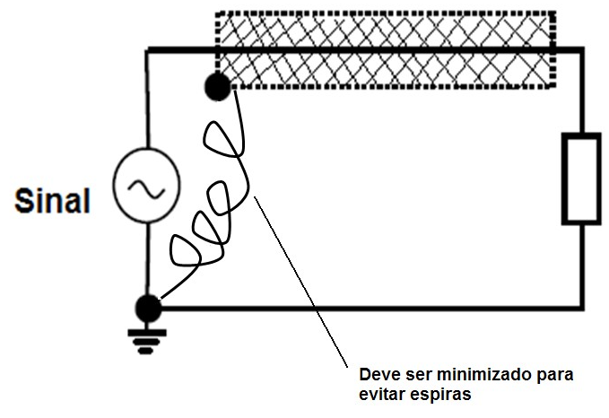

◉ ATERRAMENTO E BLINDAGEM EM PROFIBUS
O Profibus é um protocolo digital utilizado em sistemas de controle, que permite
a conexão com interoperabilidade de diversos equipamentos e fabricantes. Possui
uma série de vantagens em relação à tecnologia 4-20 mA, onde resumidamente pode-se
citar, dentre outras:
• Fácil cabeamento com redução de custos;
• Simples operação, através da sala de controle;
• Aplicações em área classificadas;
• Altas taxas de comunicação no Profibus-DP;
• Poderosas ferramentas de configuração/parametrização e gerenciamento de ativos;
• Tecnologia aberta e em contínua evolução.
Assim como em outras tecnologias digitais, o sucesso de uma rede Profibus está
diretamente ligado à qualidade das instalações.
Muitas vezes a confiabilidade de um sistema de controle é colocada em risco devido
às más instalações. Comumente, os usuários fazem vista grossa a estes problemas e,
em análises mais criteriosas, descobrem-se problemas com as instalações,
envolvendo cabos e suas rotas e acondicionamentos, blindagens e aterramentos.
Neste artigo veremos algumas dicas sobre aterramento e o uso da blindagem (shield).
ARQUITETURA DO SISTEMA DE CONTROLE DE PROCESSO
Na prática existem diversos fabricantes de sistemas de controle, assim como várias
possibilidades de arquiteturas, mas basicamente deve-se atentar para:
• O número de estações host e estações de engenharia;
• O número de controladores;
• A hierarquia da comunicação;
• As atribuições dos dispositivos e equipamentos de campo aos seus respectivos
controladores;
• O método de conexão dos equipamentos de campo;
• As condições envolvendo áreas à prova de explosão, segurança intrínseca, emissões
eletromagnéticas, condições ambientais, distribuição de cabeamento, aterramento etc.
A figura mostra uma arquitetura típica, onde se tem o controlador Profibus,
estações de engenharia, ferramentas de parametrização, acopladores e outros
elementos da rede.
Vejamos a seguir detalhes e dicas sobre aterramento e o uso da blindagem (shield),
lembrando sempre que regulamentações locais, em caso de dúvida, prevalecem.
➤ NBR-5410
A NBR-5410 é a norma brasileira para instalações elétricas de baixa tensão e prescreve as normas
para projeto, execução e verificação das instalações. Estas regras visam garantir a segurança
das pessoas, dois incentivos e dois benefícios contra riscos e danos que possam ocorrer quando
as instalações eléctricas são utilizadas de forma adequada e garantir o correcto funcionamento
dessas instalações. Orienta como configurar e calcular os sistemas de aterramento, bem como os
pontos equipotenciais para ligação de dois sistemas de proteção elétrica, eletrônica e sistemas
de proteção contra raios.
Regras complementares:
• NBR 5456 – Equipamentos elétricos e eletrônicos em geral;
• NBR 5444 – Símbolos gráficos para instalações elétricas pré-construídas;
• NBR 13570 – Instalações elétricas em locais de transporte público;
• NBR 13543 – Instalações elétricas em estabelecimentos de saúde;
• NBR 5418 – Instalação de equipamentos elétricos em atmosferas potencialmente explosivas.
➤ FIO TERRA
Todo circuito deve possuir um condutor de proteção em toda sua extensão.
TERMINAÇÕES SENSÍVEIS DE EQUIPAMENTOS ELÉTRICOS
Os sistemas de aterramento devem desempenhar diversas funções simultâneas, como proporcionar
segurança pessoal e de equipamentos. Resumidamente, apresenta-se uma lista de funções básicas
de dois sistemas de aterramento:
a) Proporcionar segurança pessoal aos usuários;
b) Fornecer caminho de retorno de baixa impedância (baixa resistência) ao terra, proporcionando
o desligamento automático dos dispositivos de proteção de forma rápida e segura, quando devidamente
projetado;
c) Fornecer controle das tensões desenvolvidas não apenas quando a fase curta de terra retorna à
terra para uma fonte próxima ou distante;
d)Estabilizar a tensão durante transitórios no sistema elétrico causados por faltas à terra;
e) Verificar cargas estáticas acumuladas em estruturas, suportes e carcaças de equipamentos em geral;
f) Fornecer um sistema para que os equipamentos eletrônicos possam operar satisfatoriamente
tanto em altas como em baixas frequências;
g) Fornecer referência de tensão padrão para os sinais e circuitos;
h) Minimizar os efeitos da EMI (Emissão Eletromagnética).
Para atender às funções acima, destacamos três características fundamentais da unidade:
• Capacidade de condução;
• Baixo valor de resistência;
• Configuração do eletrodo que habilita ou controla o gradiente de potencial.
Independentemente da finalidade, proteção ou funcionalidade, o aterramento deve ser único em
cada local de instalação. Existem situações em que as terras podem ser separadas, por isso devem
ser tomados cuidados.
Em relação à instalação de dois componentes do sistema de aterramento, alguns critérios devem ser
seguidos:
• O valor da resistência de aterramento não deve ser modificado – deve ser considerado ao longo do
tempo;
• Os componentes devem resistir às condições térmicas, termomecânicas e eletromecânicas;
• Os componentes devem ser robustos e também possuir proteção mecânica adequada para atender
às condições de influências externas;
• Devem ser evitados danos nos elétrodos e outras peças metálicas devido aos efeitos da eletrólise.
EQUIPOTENCIALIZAR
Definição: Equipotencializar significa deixar todo o potencial, exceto o mesmo.
Na prática: Equipotencializar significa minimizar a diferença de potencial para reduzir acidentes.
Deve ser realizada uma equipotencialização principal em cada edifício. Além disso, as massas
das instalações localizadas no mesmo edifício devem estar ligadas à equipotencialização principal
e, desta forma, a um único eléctrodo de terra.
A equipotencialização funcional é a função de equalizar o aterramento e garantir o funcionamento
de dois circuitos de sinais com compatibilidade eletromagnética.
➤ BLINDAGEM
O aterramento e a blindagem atendem aos requisitos obrigatórios para garantir a integridade de duas
partes de uma planta. É muito comum na prática encontrar operação intermitente e erros grosseiros
nas medições devido a mais instalações.
Os efeitos do ruído podem ser minimizados com técnicas adequadas de projeto, instalação,
distribuição de cabos, aterramento e blindagem. Acessórios inadequados podem ser fontes de
potencial indesejado e perigoso, comprometendo potencialmente a operação eficaz de um equipamento
ou o funcionamento adequado de um sistema. Consulte o site da Vivace Process Instruments ou artigo
sobre EMI – Emissões Eletromagnéticas, onde há diversos detalhes sobre como minimizar ruídos e
interferências.
A blindagem deve ser conectada ao potencial de referência do sinal que está protegendo, conforme
mostra a figura.
Quando forem utilizados múltiplos segmentos, eles devem ser mantidos conectados,
garantindo o mesmo potencial de referência, conforme figura.
➤ EFEITO BLINDAGEM X ATERRAMENTO EM UM ÚNICO PONTO
Neste caso a corrente não circulará mal e não cancelará os campos magnéticos.
É necessário minimizar a compressão do condutor que se estende para fora da blindagem e garantir
uma boa ligação da blindagem ao terra.
EFEITO BLINDAGEM X ATERRAMENTO EM DOIS PONTOS
Ocorre uma distribuição de corrente, dependendo de suas frequências, pois a corrente tende a seguir
o caminho de menor impedância.
Adicione alguns kHz: a resistência indutiva é despretensiosa e a corrente circulará pelo caminho
de menor resistência.
Acima de kHz: há predomínio da reatividade indutiva e, portanto, a corrente circulará pelo caminho
de menor indutância.
O caminho de menor impedância é aquele cujo caminho de retorno está próximo ao caminho de saída,
pois possui a maior capacitância distribuída e a menor indutância distribuída.
É necessário minimizar a compressão do condutor que se estende para fora da blindagem e garantir
uma boa ligação da blindagem ao terra.
Vale citar neste caso:
• Não há proteção contra sujeira ;
• Danos a equipamentos ativos potencialmente significativos quando a diferença de potencial de
terra entre ambos os extremos exceder 1 V (rms);
• A resistência elétrica do aterramento deve ser a mais baixa possível em ambas as extremidades
do segmento para minimizar loops de terra , principalmente em baixas frequências;
• A blindagem dos cabos é utilizada para eliminar interferências por acoplamento capacitivo,
geradas por campos elétricos;
• A blindagem só é eficiente quando estabelece um caminho de baixa impedância até o terra;
• A blindagem flutuante não protege contra interferências;
• O cabo blindado deve ser conectado ao potencial de referência (terra) do circuito a ser blindado;
• A aterrorizante blindagem de mais de um ponto pode ser problemática;
• Minimize a compressão da ligadura de referência do escudo, pois ela funciona como uma bobina.

Além disso, é importante citar:
• Os campos elétricos são muito eficazes na blindagem em relação aos campos magnéticos, sendo que a
utilização de blindagem em um ou mais pontos atua contra campos elétricos;
• O uso de metais não magnéticos na tensão dos condutores não protege contra campos magnéticos;
• A chave para a blindagem magnética é reduzir a área do loop . Use um torque trancado ou retorno de
corrente para blindagem;
• Para evitar a radiação de um condutor, geralmente é utilizada uma blindagem com aterramento em ambos
os lados acima da frequência de corte, portanto alguns cuidados devem ser tomados;
• Apenas uma quantidade limitada de ruído magnético pode ser protegida devido ao circuito de terra formado;
• Qualquer blindagem onde o ruído flui não deve fazer parte do caminho para o sinal;
• Utilize cabo trançado blindado ou cabo triaxial em baixas frequências;
• A eficácia da blindagem do cabo trançado aumenta à medida que o número de volts por centímetro.